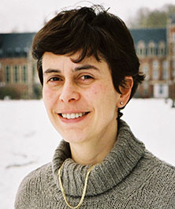
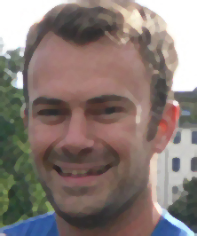
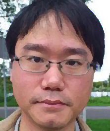
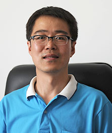
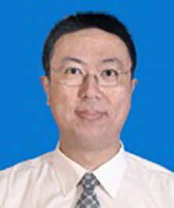
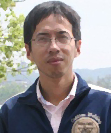
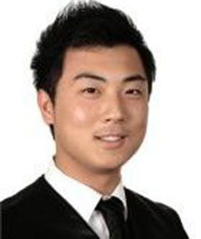

Bart Preneel KU Leuven, Belgium

Bart Preneel is full professor at the KU Leuven where he heads the COSIC research group which has 60 members. He was visiting professor at five universities in Europe and was a research fellow at the University of California at Berkeley and a scientific advisor of Philips Research. He has authored more than 400 scientific publications and is inventor of 4 patents. His main research interests are cryptography, information security and privacy and he frequently consults on these topics. Bart Preneel has participated to more than 30 international research projects sponsored by the European Commission, for five of these as project manager. He has served as panel member for several research funding agencies including the European Research Council. He is president of the IACR (International Association for Cryptologic Research) and a member of the Permanent Stakeholders group of ENISA. He is serving on several advisory board including those of CASED (Darmstadt), Intrinsic-ID (the Netherlands) and the Royal Holloway Centre for Doctoral Training in Cyber Security Research (UK). He has served as program chair of 15 international conferences and he has been invited speaker at more than 80 conferences in 40 countries.
Ingrid Verbauwhede KU Leuven, Belgium ( IEEE Fellow )
Ingrid Verbauwhede is a Professor in ESAT, the Electrical Engineering Department at the KU Leuven, Belgium and adjunct professor at UCLA, USA. She joined the research group COSIC in 2003, and she leads the embedded systems and hardware group of it. Before that, from 1998 she was an associate professor at UCLA, Los Angeles, CA, where she founded the EMSEC (embedded security) research group. She received her electrical engineering degree and her Ph.D. degree from KU Leuven. She was a post-doctoral visiting researcher and lecturer at UC Berkeley and worked for TCSI and Atmel in Berkeley, CA. She was a research assistant at IMEC and the KU Leuven. She is a Member of IACR and a Senior Member of IEEE. She was elected member of the Royal Flemish Academy of Belgium for Science and the Arts in 2011. Her main interest is in the design and the design methods for secure embedded circuits and systems. Dr. Verbauwhede is co-inventor of SABL and WDDL. She has published more than 350 publications in peer-reviewed conferences and journals. She is author of 8 issued patents.
Benedikt Gierlichs KU Leuven, Belgium
Dr. Benedikt Gierlichs joined the COSIC research group at KU Leuven (Belgium) as a PhD student in 2006. He obtained a PhD in electrical engineering with his thesis on "Statistical and Information-Theoretic Methods for Power Analysis on Embedded Cryptography" in 2011. His research focuses on the (physical) security of embedded devices, in particular side-channel analysis, fault analysis and countermeasures. Prior to joining COSIC, Benedikt Gierlichs studied IT-security engineering at the university of Bochum and obtained an MSc in 2006. Further, he completed a long-term internship at the Security Technologies department of Gemplus (now part of Gemalto). Dr. Gierlichs is currently a post-doctoral fellow with the Funds for Scientific Research Flanders (Belgium). He is (co-)author of more than 25 scientific publications in international, peer-reviewed conferences and journals.
Jörn-Marc Schmidt Graz University, Austria
Jörn-Marc Schmidt studied Computer Science at the University of Mannheim, Germany, with concentration on Cryptography and received his diploma (corresponds to master) in 2006. In 2007, he became member of the VLSI and Security group at the IAIK, where he was working on theory and practice of fault attacks. Jörn-Marc received his PhD degree in October 2009 from Graz University of Technology, Austria. Since 2010, he leads the Secure Entities for Smart Environments (SEnSE)Group at IAIK. In particular, he is responsible for coordinating the research activities Secure RFID, Implementation Attacks, and VLSI.
Kai Fan Chang Brightsight, The Netherlands
Kai-Fan obtained his Bachelor and Master degree from TU Delft Electrical Engineering faculty, and an EMBA degree from Rotterdam School of Management. He is a certified Common Criteria evaluator for BSI (German), NSCIB (The Netherlands), SERTIT (Norway) and JISEC (Japan) certification bodies. He has been working seven years at Brightsight as security evaluator for payment terminal, smart card, and other IT products. During the last 7 years, he was invited to speak in many workshops as a consultant on Common Criteria. He is responsible for China market as Marketing manager Asia-Pacific since 2010.
Marc F. Witteman Riscure Delft, The Netherlands

Marc Witteman has a long track record in the security industry. He has been involved with a variety of security projects for over two decades and worked on applications in mobile communications, payment industry, identification, and pay television. Recent work includes secure programming and ePassport security issues. He has authored several articles on smart card and embedded device security issues. Further, he has extensive experience as a trainer, lecturing security topics for audiences ranging from novices to experts. As a security analyst he developed several tools for testing software and hardware security. This includes Inspector, a platform for conducting side-channel analysis and JCworkBench, a logical test tool. Marc Witteman has an MSc in Electrical Engineering from the Delft University of Technology in the Netherlands. From 1989 till 2001 he worked for several telecom operators, the ETSI standardization body and a security evaluation facility. In 2001 he founded Riscure, a security lab based in the Netherlands. Riscure offers consulting and testing services to manufacturers and issuers of advanced security technology. Between 2001 and 2011 he raised the company to a leading security test lab, and side channel test tool vendor. In 2010 Marc Witteman started Riscure Inc, the US branch of Riscure, based in San Francisco, California. At present he is the Chief Technology Officer of the Riscure Security Lab.
Rui Zhang Chinese Academy of Sciences, China
Rui Zhang is currently a research professor at State Key Lab of Information Security (SKLOIS), Institute of Information Engineering (IIE), Chinese Academy of Sciences. He was a JSPS research fellow before he joined a research scientist at National Institute of Advanced Industrial Science and Technology (AIST), Japan as a research scientist. He was a guest associate professor at Tokyo University of Science from 2008 to 2011. His research interest is cryptography and cryptographic engineering.
An Wang Tsinghua University, China
An Wang is a post doctor in the Institute of Microelectronics, Tsinghua University, China. He gained bachelor (2005), master (2008) and doctorate (2011) degrees at Shandong University. His research focuses on side-channel analysis and cryptographic engineering. He has been employed as a reviewer by KSII Transactions on Internet and Information Systems, China Communications, Transactions of Tianjin University, et al. In 2005, he founded the cryptographic website “Mathmagic”.
Yu Yu Tsinghua University, China
Yu Yu is currently an assistant professor at Institute for Interdisciplinary Information Science, Tsinghua University. He received his B.Sc degree from Fudan University in 2003, and then his Ph.D from Nanyang Technological University in 2006. He worked as a cryptographic analyst at the ICT security lab of T-Systems Singapore from 2006 to 2008, and as post-doctoral researcher at the UCL Crypto Group (Belgium) from 2008 to 2010. He joined the CS department at East China Normal University as associate professor in 2010. His research interests focus on formal treatments on counteracting side-channel attacks (aka. Leakage-Resilient Cryptography), pseudorandomness, and cryptography in general. He has publications at major venues such as CRYPTO, TCC, CCS, CT-RSA, ACNS, etc.
Wei Yuan Mao Applus Laboratories in Shanghai, China
BIO: Wei Yuan is a security analyst currently working at Applus Laboratories in Shanghai, China. During his last four years, he has been working on the development of Java Card applets and later on, security evaluations of smart card products for Common Criteria and EMVco security certifications programs in Barcelona, Spain. He studied Computer Systems BSc at Pompeu Fabra university, Barcelona, Spain. His expertise is on the security of smart cards products, specially on payment applications and identification applications.
Zengju Li Bank Card Test Center, China
李增局，安全工程师，主要研究方向为安全芯片相关攻击尤其是侧信道攻击技术。2006年获得兰州大学物理学学士学位，2009年获得中科院电子所工学硕士学位。学生期间主要从事信号处理相关的研究，毕业后一直从事芯片安全评估相关的工作。曾参与863课题、国家发改委、工信部的项目，目前主要负责侧信道相关的安全评 估工作，曾经评估过多款安全芯片，有相对丰富的芯片安全评估经验。